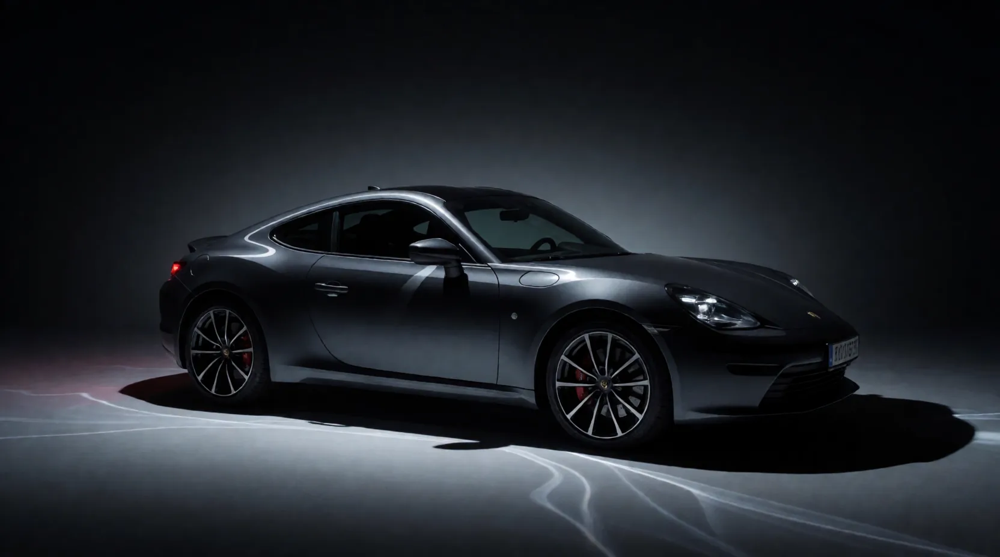

Hill-Climb
This one is the control. The workflow and the seed never change, the scoring rubric is locked before the first image exists, and the agent is only allowed to edit one clause of the prompt per step. Score the frame, find the weakest thing about it, fix that one thing, repeat. Two defects survived every rewording attempted; experiment 03 was designed to test whether varying the seed could remove them.
iteration 000 seed 424242 · 13.73s
prompt: a dark grey sports coupe in a photo studio
| paint_reflections | 5/10 |
| separation_rim | 5/10 |
| materials | 6/10 |
| composition_stance | 6/10 |
| technical | 5/10 |
| total | 27/50 |
judge notes: Clean catalog shot, not a hero shot. Flat even ambient light: no scrim lines on the shoulder or hood, no rim/kicker, background is a featureless light grey with weak contact shadow. Identity mashup (86-style body, BMW badge) and mushy headlight internals cap technical at 5.
next mutation: Target paint_reflections: replace flat ambient with low-key studio + explicit scrim-line language; dark sweep should also buy rim separation.
iteration 001 seed 424242 · 8.13s

prompt: a dark grey sports coupe in a photo studio, dramatic low-key automotive lighting, long softbox scrim reflections tracing the body lines, dark gradient sweep background
| paint_reflections | 7/10 |
| separation_rim | 6/10 |
| materials | 7/10 |
| composition_stance | 7/10 |
| technical | 6/10 |
| total | 33/50 |
judge notes: Low-key transformation worked: soft scrim highlight tracing the shoulder line, believable rolloff, strong grounded contact shadow. Held back by: rear third merging into the black background (no kicker), accidental-looking wavy light streaks on the floor, garbled license plate, slight brand-mashup styling.
next mutation: Target separation_rim: explicit rim/kicker on roofline and rear quarter; also swap the streaky floor for a clean glossy one and remove the plate.
iteration 002 seed 424242 · 8.15s
prompt: a dark grey sports coupe in a photo studio, dramatic low-key automotive lighting, long softbox scrim reflections tracing the body lines, dark gradient sweep background, crisp rim light outlining the roofline and rear quarter panel, clean glossy black studio floor with subtle mirror reflection, no license plate
| paint_reflections | 8/10 |
| separation_rim | 8/10 |
| materials | 8/10 |
| composition_stance | 8/10 |
| technical | 7/10 |
| total | 39/50 |
judge notes: Floor streaks gone, glossy floor reflection believable, plate removed, background halo behind the greenhouse gives real separation. Continuous scrim highlight along the beltline. Remaining: static dead-side profile reads catalog not hero, rocker panel falls to pure black, small mushy details (fender vent, roof protrusion).
next mutation: Target composition_stance: switch static side profile to a low 3/4 front hero angle; all lighting language held constant.
iteration 003 seed 424242 · 8.21s
prompt: a dark grey sports coupe in a photo studio, low three-quarter front hero angle, dramatic low-key automotive lighting, long softbox scrim reflections tracing the body lines, dark gradient sweep background, crisp rim light outlining the roofline and rear quarter panel, clean glossy black studio floor with subtle mirror reflection, no license plate
| paint_reflections | 8/10 |
| separation_rim | 9/10 |
| materials | 8/10 |
| composition_stance | 9/10 |
| technical | 7/10 |
| total | 41/50 |
judge notes: Hero angle landed: low 3/4 front, halo separation excellent, grounded stance with floor reflection. Remaining: hood scrim lines are squiggly/hard-clipped rather than smooth sweeps (reads AI), grille mesh and badge are mushy, unexplained orange reflection blob on the floor.
next mutation: Target technical: reword scrim clause to demand smooth unbroken sweeps and add sharp grille/emblem detail.
iteration 004 seed 424242 · 7.42s
prompt: a dark grey sports coupe in a photo studio, low three-quarter front hero angle, dramatic low-key automotive lighting, smooth unbroken softbox scrim reflections flowing along the body lines, dark gradient sweep background, crisp rim light outlining the roofline and rear quarter panel, clean glossy black studio floor with subtle mirror reflection, sharp detailed front grille and emblem, no license plate
| paint_reflections | 8/10 |
| separation_rim | 9/10 |
| materials | 8/10 |
| composition_stance | 9/10 |
| technical | 8/10 |
| total | 42/50 |
judge notes: Grille mesh now crisp, orange blob resolved into motivated amber signal reflections, scrim sweeps smoother. Left: hood/fender highlight still has one wavy kink, badge remains a soft blob, paint could roll off more gradually into the rocker shadow.
next mutation: Target paint_reflections: demand mirror-polished paint and continuous elegant sweeps to kill the remaining wavy kink.
iteration 005 seed 424242 · 7.51s
prompt: a dark grey sports coupe in a photo studio, low three-quarter front hero angle, dramatic low-key automotive lighting, flawless mirror-polished paint with long elegant continuous highlight sweeps along the body lines, dark gradient sweep background, crisp rim light outlining the roofline and rear quarter panel, clean glossy black studio floor with subtle mirror reflection, sharp detailed front grille and emblem, no license plate
| paint_reflections | 8/10 |
| separation_rim | 9/10 |
| materials | 8/10 |
| composition_stance | 9/10 |
| technical | 8/10 |
| total | 42/50 |
judge notes: Visually near-identical quality to n=4: same strengths, same two prompt-resistant defects (soft emblem, kinked hood highlight). Adjective-level paint language is no longer moving the image - likely approaching the model+seed ceiling.
next mutation: Target technical: add professional-advertising/ultra-sharp framing keywords, the last lever for micro-detail before declaring plateau.
iteration 006 seed 424242 · 7.5s
prompt: professional automotive advertising photograph of a dark grey sports coupe in a photo studio, low three-quarter front hero angle, dramatic low-key automotive lighting, flawless mirror-polished paint with long elegant continuous highlight sweeps along the body lines, dark gradient sweep background, crisp rim light outlining the roofline and rear quarter panel, clean glossy black studio floor with subtle mirror reflection, sharp detailed front grille and emblem, ultra sharp detail, no license plate
| paint_reflections | 9/10 |
| separation_rim | 9/10 |
| materials | 8/10 |
| composition_stance | 9/10 |
| technical | 8/10 |
| total | 43/50 |
judge notes: The advertising keyword lifted micro-detail (crisp grille bars, detailed lamps, elegant continuous hood sweeps) but also redesigned the car toward GT proportions - a reminder that style keywords move composition, not just quality. Emblem still soft; grille slats slightly irregular.
next mutation: Target materials: single-word-level mutation on the emblem clause; if total moves <=1 the run is at plateau.
iteration 007 seed 424242 · 7.54s

prompt: professional automotive advertising photograph of a dark grey sports coupe in a photo studio, low three-quarter front hero angle, dramatic low-key automotive lighting, flawless mirror-polished paint with long elegant continuous highlight sweeps along the body lines, dark gradient sweep background, crisp rim light outlining the roofline and rear quarter panel, clean glossy black studio floor with subtle mirror reflection, sharp detailed front grille, crisply machined metal emblem, ultra sharp detail, no license plate
| paint_reflections | 9/10 |
| separation_rim | 9/10 |
| materials | 9/10 |
| composition_stance | 9/10 |
| technical | 8/10 |
| total | 44/50 |
judge notes: Emblem now reads as machined metal - the word-level mutation worked. Grille slats more uniform. Only remaining deduction: the hood highlight cluster is busy (three crossing sweeps where a real scrim rig would throw one or two), keeping technical at 8.
next mutation: Target technical: constrain the hood to two clean sweeps to kill the busy crossing highlights.
iteration 008 seed 424242 · 7.52s
prompt: professional automotive advertising photograph of a dark grey sports coupe in a photo studio, low three-quarter front hero angle, dramatic low-key automotive lighting, flawless mirror-polished paint with two long clean unbroken highlight sweeps along the hood and body lines, dark gradient sweep background, crisp rim light outlining the roofline and rear quarter panel, clean glossy black studio floor with subtle mirror reflection, sharp detailed front grille, crisply machined metal emblem, ultra sharp detail, no license plate
| paint_reflections | 9/10 |
| separation_rim | 9/10 |
| materials | 9/10 |
| composition_stance | 9/10 |
| technical | 8/10 |
| total | 44/50 |
judge notes: Equal to n=7. The two-sweep instruction did not simplify the hood cluster - the zigzag highlight persists across three consecutive iterations regardless of wording. This defect appears seed-locked rather than prompt-addressable.
next mutation: Target technical, final attempt: single-sweep wording. If total holds at 43-44 the plateau rule fires and the run ends.
iteration 009 seed 424242 · 7.47s
prompt: professional automotive advertising photograph of a dark grey sports coupe in a photo studio, low three-quarter front hero angle, dramatic low-key automotive lighting, flawless mirror-polished paint with a single long unbroken highlight sweep along the hood and body lines, dark gradient sweep background, crisp rim light outlining the roofline and rear quarter panel, clean glossy black studio floor with subtle mirror reflection, sharp detailed front grille, crisply machined metal emblem, ultra sharp detail, no license plate
| paint_reflections | 8/10 |
| separation_rim | 9/10 |
| materials | 9/10 |
| composition_stance | 9/10 |
| technical | 8/10 |
| total | 43/50 |
judge notes: The single-sweep wording backfired: the hood highlight became a looping calligraphic squiggle. Confirms the hood-reflection defect is not prompt-addressable at this seed. Last four totals 43,44,44,43 (spread 1) - PLATEAU RULE FIRED. Run ends. Best iterations: n=7 and n=8 at 44/50.
next mutation: Stop condition met: spread < 2 over last 4 scored iterations.